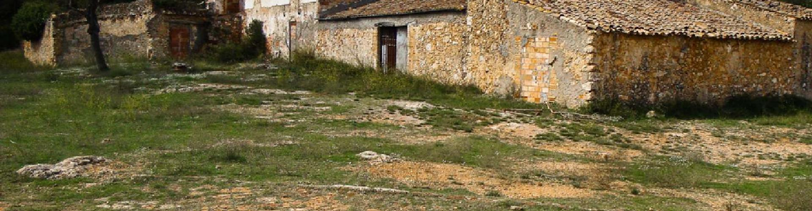

Ruta · Vallirana
Interessant ruta circular que, sortint de la zona de Can Rovira , ens porta a conèixer racons com la font i bassa de Sant Ponç , i elements patrimonials com l'antic monestir de Sant Ponç i antics…